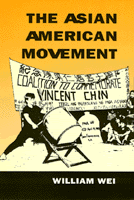

<body bgcolor="#FFFFFF" text="#000000" link="#0000FF" vlink="#CC0000" alink="#CC0000"><center><hr width="350" size="1" align="center" noshade>The first history and analysis of the Asian American Movement<hr width="350" size="1" align="center" noshade><p><a href="https://cdcshoppingcart.uchicago.edu/Cart/ChicagoBook.aspx?ISBN=9781566390491&&PRESS=temple" target="_top">Buy this book!</a> | <a href="https://cdcshoppingcart.uchicago.edu/Cart/Cart.aspx?PRESS=temple" target="_top">View Cart</a> | <a href="https://cdcshoppingcart.uchicago.edu/Cart/Cart.aspx?PRESS=temple" target="_top">Check Out</a></p><p></p></center><!--none//--><h1>The Asian American Movement</h1>
<h3>William Wei</h3>
<P>cloth 1-56639-049-4 $59.50, Jun 93, <FONT COLOR=#990033>Out of Stock Unavailable</FONT>
<br>paper 1-56639-183-0 $32.95, Jan 95, <FONT COLOR=#990033>Available</FONT>
<br>Electronic Book 1-43990-374-3 $32.95 <FONT COLOR=#990033>Out of Stock Unavailable</FONT>
<BR> 376 pp
6x9
3&nbsp;figures 10&nbsp;halftones
</P><BLOCKQUOTE><I>"This is the first-ever study of the Asian American movement. It is a unique source and is going to have a significant audience among all those interested in the Asian American experience."</I>
<br>&#151<b>Richard Flacks</b>, University of California, Santa Barbara<I></I></BLOCKQUOTE>
<p>Active for more than two decades, the Asian American movement began a middle-class reform effort to achieve racial equality, social justice, and political empowerment. In this first history and in-depth analysis of the Movement, William Wei traces to the late 1960s, the genesis of an Asian American identity, culture, and activism.
<p>Wei analyzes the Asian American women's movement, the alternative press, Asian American involvement in electoral politics. Interviews with many key participants in the Movement and photographs of Asian American demonstrations and events enliven this portrayal of the Movement's development, breadth, and conflicts.
<BR>&nbsp;<h2>Excerpt</h2><P>Excerpt available at <a href="http://www.temple.edu/tempress">www.temple.edu/tempress</a></p>
<BR>&nbsp;<h2>Contents</h2><P>
<p>Preface
<br>Acknowledgments
<br>Introduction
<br>1. Origins of the Movement
<br>2. Who Am I? Creating an Asian American Identity and Culture
<br>3. Race versus Gender: The Asian American Women's Movement
<br>4. Speaking Out: The Asian American Alternative Press
<br>5. Activists and the Development of Asian American Studies
<br>6. "To Serve the People": Reformers and Community-Based Organizations
<br>7. The Emergence and Eclipse of Maoist Organizations
<br>8. From Radical to Electoral Politics: The Asian American Odyssey for Empowerment
<br>Conclusion
<br>Abbreviations
<br>Notes
<br>Index
</P><BR>&nbsp;<H2>About the Author(s)</H2>
<table><tr><td valign="top"><img src="/tempress/authors/884_au.gif" height="90" width="75"></td><td width="100%" valign="middle"><p><b>William Wei</b> teaches modern Chinese history and Asian American studies at the University of Colorado at Boulder. Born in Tinghai, China, and raised in New York City, Dr. Wei is also the author of <I>Counterrevolution in China: The Nationalists in Jiangxi during the Soviet Period</I>.</P></td></tr></table>
<BR><H2>Subject Categories</H2>
<p><A HREF="/tempress/asian_amer.html" TARGET="_top">Asian American Studies</a>
<BR><A HREF="/tempress/american.html" TARGET="_top">American Studies</a>
</p>
<BR><h2 class="inpageheading">In the series</H2>
<P><I><a href="http://www.temple.edu/tempress/asam_history.html" onMouseOver="window.status='Click for other books in this series!'; return true;" onMouseOut="window.status=''; return true;" target="_top">Asian American History and Culture</a></i>, edited by K. Scott Wong, Linda Trinh V�, and Cathy Schlund-Vials.
</p><p>Founded by Sucheng Chan in 1991, the <I>Asian American History and Culture</I>, series has sponsored innovative scholarship that has redefined, expanded, and advanced the field of Asian American studies while strengthening its links to related areas of scholarly inquiry and engaged critique. Like the field from which it emerged, the series remains rooted in the social sciences and humanities, encompassing multiple regions, formations, communities, and identities. Extending the vision of founding editor Sucheng Chan and emeriti editor Michael Omi and David Palumbo-Liu, series editors K. Scott Wong, Linda Trinh V�, and Cathy Schlund-Vials continue to develop a foundational collection that embodies a range of theoretical and methodological approaches to Asian American studies.</p>
<p align="center"><a href="https://cdcshoppingcart.uchicago.edu/Cart/ChicagoBook.aspx?ISBN=9781566390491&&PRESS=temple" target="_top">Buy this book!</a> | <a href="https://cdcshoppingcart.uchicago.edu/Cart/Cart.aspx?PRESS=temple" target="_top">View Cart</a> | <a href="https://cdcshoppingcart.uchicago.edu/Cart/Cart.aspx?PRESS=temple" target="_top">Check Out</a></p><p><font face="Arial" size="1"><a href="copyright.html" onMouseOver="window.status='Web Copyright Policy';return true;" onMouseOut="window.status=''" title="Web Copyright Policy">&copy;</a> 2015 <a href="http://www.temple.edu" target="new" onMouseOver="window.status='Link to Temple University home page';return true;" onMouseOut="window.status=''" title="Link to Temple University home page">Temple University</a>. All Rights Reserved. http://www.temple.edu/tempress/titles/884_reg.html</font></p>